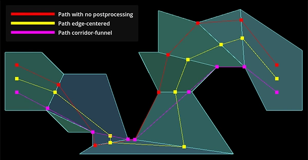

Sử dụng NavigationPathQueryObjects
Mẹo
Các tham số path query cung cấp nhiều tùy chọn để cải thiện hiệu năng tìm đường hoặc giảm mức tiêu thụ bộ nhớ.
Chúng phục vụ các nhu cầu tìm đường nâng cao hơn mà các node cấp cao không phải lúc nào cũng đáp ứng được.
Xem các phần tùy chọn tương ứng bên dưới.
NavigationPathQueryObjects có thể được dùng cùng với NavigationServer.query_path() để lấy một đường đi navigation được tùy biến sâu, kèm theo metadata tùy chọn về đường đi.
Cách này cần thiết lập nhiều hơn so với lấy một NavigationPath thông thường, nhưng cho phép bạn điều chỉnh việc tìm đường và dữ liệu đường đi trả về theo các nhu cầu khác nhau của dự án.
NavigationPathQueryObjects gồm một cặp đối tượng: một đối tượng NavigationPathQueryParameters chứa các tùy chọn tùy biến cho truy vấn và một NavigationPathQueryResult nhận các cập nhật (định kỳ) với đường đi kết quả và metadata từ truy vấn.
Phiên bản 2D và 3D của NavigationPathQueryParameters lần lượt là NavigationPathQueryParameters2D và NavigationPathQueryParameters3D.
Phiên bản 2D và 3D của NavigationPathQueryResult lần lượt là NavigationPathQueryResult2D và NavigationPathQueryResult3D.
Tạo một path query cơ bản
Cả parameters và result đều được dùng theo cặp với hàm NavigationServer.query_path().
Về các tùy chọn tùy biến có sẵn, xem thêm bên dưới. Xem thêm phần mô tả của từng tham số trong tài liệu tham khảo lớp.
Dù không phải yêu cầu bắt buộc, cả hai đối tượng đều nên được tạo một lần từ trước, lưu trong một biến lâu dài của agent và được tái sử dụng cho mọi path query tiếp theo với các tham số đã cập nhật.
Tái sử dụng cùng các đối tượng giúp cải thiện hiệu năng so với việc thường xuyên tạo đối tượng hoặc cấp phát bộ nhớ.
Script sau tạo các đối tượng và cung cấp hàm query_path() để tạo các đường đi navigation mới. Đường đi kết quả giống hệt với khi dùng NavigationServer.map_get_path() nhưng có tái sử dụng các đối tượng.
extends Node2D
# Prepare query objects.
var query_parameters := NavigationPathQueryParameters2D.new()
var query_result := NavigationPathQueryResult2D.new()
func query_path(p_start_position: Vector2, p_target_position: Vector2, p_navigation_layers: int = 1) -> PackedVector2Array:
if not is_inside_tree():
return PackedVector2Array()
var map: RID = get_world_2d().get_navigation_map()
if NavigationServer2D.map_get_iteration_id(map) == 0:
# This map has never synced and is empty, no point in querying it.
return PackedVector2Array()
query_parameters.map = map
query_parameters.start_position = p_start_position
query_parameters.target_position = p_target_position
query_parameters.navigation_layers = p_navigation_layers
NavigationServer2D.query_path(query_parameters, query_result)
var path: PackedVector2Array = query_result.get_path()
return path
extends Node3D
# Prepare query objects.
var query_parameters := NavigationPathQueryParameters3D.new()
var query_result := NavigationPathQueryResult3D.new()
func query_path(p_start_position: Vector3, p_target_position: Vector3, p_navigation_layers: int = 1) -> PackedVector3Array:
if not is_inside_tree():
return PackedVector3Array()
var map: RID = get_world_3d().get_navigation_map()
if NavigationServer3D.map_get_iteration_id(map) == 0:
# This map has never synced and is empty, no point in querying it.
return PackedVector3Array()
query_parameters.map = map
query_parameters.start_position = p_start_position
query_parameters.target_position = p_target_position
query_parameters.navigation_layers = p_navigation_layers
NavigationServer3D.query_path(query_parameters, query_result)
var path: PackedVector3Array = query_result.get_path()
return path
Tùy chọn hậu xử lý đường đi

Khác biệt khi hậu xử lý đường đi tùy theo bố cục đa giác của navigation mesh.
Một lượt tìm kiếm path query đi từ cạnh đa giác navigation mesh gần nhất đến cạnh gần nhất dọc theo các đa giác có sẵn. Nếu có thể, nó xây dựng một hành lang đa giác (polygon corridor) hướng về đa giác chứa vị trí đích.
Đường đi hành lang đa giác "tìm kiếm" thô này không được tối ưu lắm và thường không phù hợp để agent di chuyển theo. Ví dụ, điểm cạnh gần nhất trên một đa giác navigation mesh có thể khiến agent đi vòng rất xa trên các đa giác lớn. Để cải thiện chất lượng đường đi mà truy vấn trả về, có nhiều tùy chọn path_postprocessing khác nhau.
Hậu xử lý
PATH_POSTPROCESSING_CORRIDORFUNNELrút ngắn đường đi bằng cách "phễu hóa" đường đi quanh các góc bên trong hành lang đa giác có sẵn.Đây là kiểu hậu xử lý mặc định và thường cũng hữu ích nhất vì nó cho kết quả đường đi ngắn nhất bên trong hành lang đa giác có sẵn. Nếu bản thân hành lang đa giác đã không tối ưu, ví dụ do bố cục navigation mesh chưa tốt, phễu có thể bám vào những góc đa giác không mong đợi và gây ra đường vòng.
Hậu xử lý
PATH_POSTPROCESSING_EDGECENTEREDbuộc mọi điểm đường đi được đặt ở giữa các cạnh đa giác được đi qua bên trong hành lang đa giác có sẵn.Kiểu hậu xử lý này thường chỉ hữu ích khi dùng với các đa giác navigation mesh dạng ô vuông nghiêm ngặt, có kích thước đều nhau và việc đi theo đường đi cũng bị giới hạn vào tâm các ô, ví dụ game dạng lưới điển hình với chuyển động bị giới hạn vào tâm ô lưới.
Hậu xử lý
PATH_POSTPROCESSING_NONEtrả về đường đi nguyên trạng theo cách việc tìm đường đã đi bên trong hành lang đa giác có sẵn.Kiểu hậu xử lý này rất hữu ích để debug vì nó cho thấy lượt tìm đường đã đi từ điểm cạnh gần nhất đến điểm cạnh gần nhất như thế nào và đã chọn những đa giác nào. Rất nhiều kết quả đường đi bất ngờ hoặc không tối ưu có thể được giải thích ngay bằng cách nhìn vào đường đi thô và hành lang đa giác này.
Đơn giản hóa đường đi
Mẹo
Đơn giản hóa đường đi có thể giúp các agent dạng steering hoặc các agent bị rung lắc trên các cạnh đa giác mỏng.

Khác biệt điểm đường đi khi có hoặc không đơn giản hóa đường đi.
Nếu bật simplify_path, một biến thể của thuật toán đơn giản hóa đường đi Ramer-Douglas-Peucker sẽ được áp dụng cho đường đi. Thuật toán này làm thẳng đường đi bằng cách loại bỏ các điểm ít quan trọng hơn tùy theo giá trị simplify_epsilon được dùng.
Đơn giản hóa đường đi giúp xử lý mọi loại vấn đề chuyển động của agent ở "vùng trống" gây ra bởi việc có quá nhiều cạnh đa giác không cần thiết. Ví dụ, một terrain mesh khi được bake thành navigation mesh có thể tạo ra số lượng đa giác quá lớn do tất cả những biến đổi độ cao nhỏ (nhưng gần như vô nghĩa đối với việc tìm đường) của địa hình.
Đơn giản hóa đường đi cũng giúp ích cho các agent dạng "steering" vì chúng chỉ còn những điểm góc quan trọng hơn để nhắm tới.
Cảnh báo
Đơn giản hóa đường đi là một bước hậu xử lý cuối cùng bổ sung cho đường đi. Nó làm tăng chi phí hiệu năng của truy vấn nên chỉ bật khi thực sự cần.
Ghi chú
Đơn giản hóa đường đi được cung cấp trên NavigationServer dưới dạng một hàm tổng quát. Nó cũng có thể được dùng bên ngoài các truy vấn navigation cho mọi loại mảng vị trí.
Metadata của đường đi
Mẹo
Tắt các tùy chọn metadata đường đi không cần thiết có thể cải thiện hiệu năng và giảm mức tiêu thụ bộ nhớ.
Một path query có thể trả về metadata bổ sung cho mỗi điểm đường đi.
Cờ
PATH_METADATA_INCLUDE_TYPESthu thập một mảng chứa thông tin primitive về chủ sở hữu của các điểm, ví dụ một điểm thuộc về region hay link.Cờ
PATH_METADATA_INCLUDE_RIDSthu thập một mảng chứa các RIDs của chủ sở hữu các điểm. Tùy theo primitive của chủ sở hữu điểm, các RID này có thể được dùng với nhiều hàm NavigationServer liên quan đến region hoặc link.Cờ
PATH_METADATA_INCLUDE_OWNERSthu thập một mảng chứa cácObjectIDscủa chủ sở hữu các điểm. Các object ID này có thể được dùng với @GlobalScope.instance_from_id() để lấy node đứng sau instance đối tượng đó, ví dụ một node NavigationRegion hoặc NavigationLink.
Theo mặc định, mọi metadata đường đi đều được thu thập vì metadata này có thể rất cần thiết cho gameplay navigation nâng cao hơn.
Ví dụ: để biết điểm đường đi nào tương ứng với đối tượng hoặc node chủ sở hữu nào trong SceneTree.
Ví dụ: để biết một điểm đường đi có phải là điểm đầu hoặc cuối của một navigation link cần được script tiếp quản hay không.
Với những cách dùng đường đi cơ bản nhất, metadata không phải lúc nào cũng cần. Việc thu thập metadata đường đi có thể được tắt có chọn lọc để tăng hiệu năng và giảm mức tiêu thụ bộ nhớ.
Loại trừ hoặc bao gồm region
Mẹo
Bộ lọc region có thể giúp ích rất nhiều cho hiệu năng trên các navigation map lớn được phân chia theo region.
Các tham số truy vấn cho phép giới hạn việc tìm đường vào navigation mesh của những region cụ thể.
Nếu một navigation map lớn được phân chia tốt thành các region nhỏ hơn, điều này có thể giúp ích rất nhiều cho hiệu năng vì truy vấn có thể bỏ qua một số lượng lớn đa giác ở một trong những bước kiểm tra sớm nhất của việc tìm đường.
Theo mặc định và nếu để trống, mọi region của navigation map được truy vấn đều được bao gồm.
Nếu một RID của region được thêm vào mảng
excluded_regions, navigation mesh của region đó sẽ bị bỏ qua khi tìm đường.Nếu một RID của region được thêm vào mảng
included_regions, navigation mesh của region đó sẽ được xét đến khi tìm đường, đồng thời mọi region khác không được bao gồm cũng sẽ bị bỏ qua.Nếu một region vừa được bao gồm vừa bị loại trừ, nó được coi là bị loại trừ.
Bộ lọc region rất hiệu quả về hiệu năng khi kết hợp với các chunk navigation region được căn theo lưới. Bằng cách này, bộ lọc có thể được đặt để chỉ bao gồm chunk chứa vị trí bắt đầu và các chunk xung quanh thay vì toàn bộ navigation map.
Ngay cả khi đích có thể nằm ngoài các chunk xung quanh này (luôn có thể thêm nhiều "vòng" hơn), việc tìm đường sẽ cố tạo một đường đi đến đa giác gần đích nhất. Điều này thường tạo ra các nửa đường đi hướng về phía chung đủ tốt, tất cả chỉ với một phần nhỏ chi phí hiệu năng so với việc tìm kiếm trên toàn bộ map.
Phần bổ sung sau cho script path query cơ bản minh họa ý tưởng cách tích hợp việc ánh xạ chunk region với các bộ lọc region. Đây không phải là một ví dụ hoạt động đầy đủ.
extends Node2D
# ...
var chunk_id_to_region_rid: Dictionary[Vector2i, RID] = {}
func query_path(p_start_position: Vector2, p_target_position: Vector2, p_navigation_layers: int = 1) -> PackedVector2Array:
# ...
var regions_around_start_position: Array[RID] = []
var chunk_rings: int = 1 # Increase for very small regions or more quality.
var start_chunk_id: Vector2i = floor(p_start_position / float(chunk_size))
for y: int in range(start_chunk_id.y - chunk_rings, start_chunk_id.y + chunk_rings):
for x: int in range(start_chunk_id.x - chunk_rings, start_chunk_id.x + chunk_rings):
var chunk_id: Vector2i = Vector2i(x, y)
if chunk_id_to_region_rid.has(chunk_id):
var region: RID = chunk_id_to_region_rid[chunk_id]
regions_around_start_position.push_back(region)
query_parameters.included_regions = regions_around_start_position
# ...
extends Node3D
# ...
var chunk_id_to_region_rid: Dictionary[Vector3i, RID] = {}
func query_path(p_start_position: Vector3, p_target_position: Vector3, p_navigation_layers: int = 1) -> PackedVector3Array:
# ...
var regions_around_start_position: Array[RID] = []
var chunk_rings: int = 1 # Increase for very small regions or more quality.
var start_chunk_id: Vector3i = floor(p_start_position / float(chunk_size))
var y: int = 0 # Assume a planar navigation map for simplicity.
for z: int in range(start_chunk_id.z - chunk_rings, start_chunk_id.z + chunk_rings):
for x: int in range(start_chunk_id.x - chunk_rings, start_chunk_id.x + chunk_rings):
var chunk_id: Vector3i = Vector3i(x, y, z)
if chunk_id_to_region_rid.has(chunk_id):
var region: RID = chunk_id_to_region_rid[chunk_id]
regions_around_start_position.push_back(region)
query_parameters.included_regions = regions_around_start_position
# ...
Cắt ngắn đường đi và giới hạn
Mẹo
Các giới hạn được đặt hợp lý có thể giúp ích rất nhiều cho hiệu năng trên các navigation map lớn, đặc biệt khi đích hóa ra không thể đến được.

Cắt ngắn đường đi trả về theo các khoảng cách cụ thể.
Các tham số truy vấn cho phép cắt ngắn đường đi trả về theo các độ dài cụ thể. Các tùy chọn này cắt đường đi như một phần của bước hậu xử lý. Đường đi vẫn được tìm kiếm như với độ dài đầy đủ nên sẽ có cùng chất lượng. Cắt ngắn độ dài đường đi có thể hữu ích để tạo các đường đi phù hợp hơn với gameplay có giới hạn, ví dụ các game chiến thuật với phạm vi di chuyển hạn chế.
Thuộc tính
path_return_max_lengthcó thể được dùng để cắt ngắn đường đi trả về theo một độ dài tối đa cụ thể.Thuộc tính
path_return_max_radiuscó thể được dùng để cắt ngắn đường đi trả về trong phạm vi bán kính hình tròn (2D) hoặc hình cầu (3D) quanh vị trí bắt đầu.
Các tham số truy vấn cho phép giới hạn việc tìm đường chỉ tìm đến một khoảng cách cụ thể hoặc một số lượng đa giác được tìm kiếm cụ thể. Các tùy chọn này phục vụ hiệu năng và ảnh hưởng trực tiếp đến việc tìm đường.
Thuộc tính
path_search_max_distancecó thể được dùng để dừng việc tìm đường khi vượt quá khoảng cách này tính từ vị trí bắt đầu.Thuộc tính
path_search_max_polygonscó thể được dùng để dừng việc tìm đường khi vượt quá số lượng đa giác được tìm kiếm này.
Khi việc tìm đường bị dừng do chạm giới hạn, đường đi được đặt lại và tạo một đường đi từ đa giác chứa vị trí bắt đầu đến đa giác gần vị trí đích nhất tìm được cho đến lúc đó.
Cảnh báo
Mặc dù tốt cho hiệu năng, nếu các giá trị giới hạn tìm đường được đặt quá thấp, chúng có thể ảnh hưởng rất tiêu cực đến chất lượng đường đi. Tùy theo bố cục đa giác và kiểu tìm kiếm, đường đi trả về có thể đi theo những hướng hoàn toàn sai thay vì hướng về phía đích.